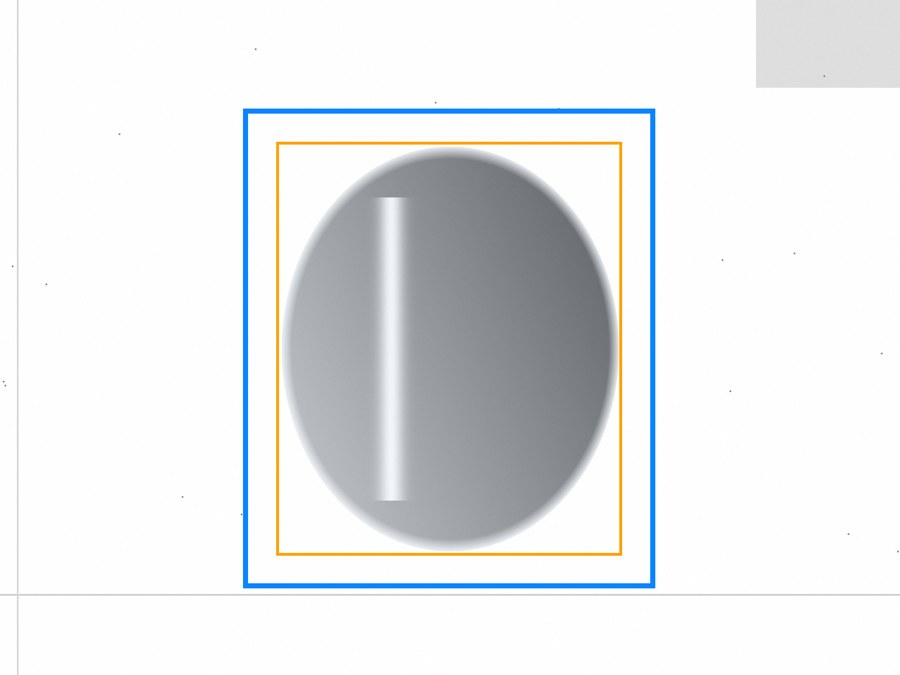
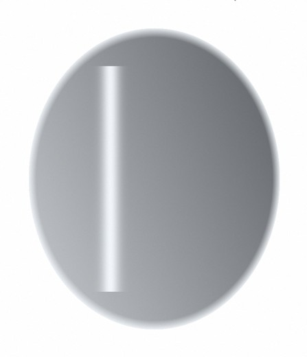
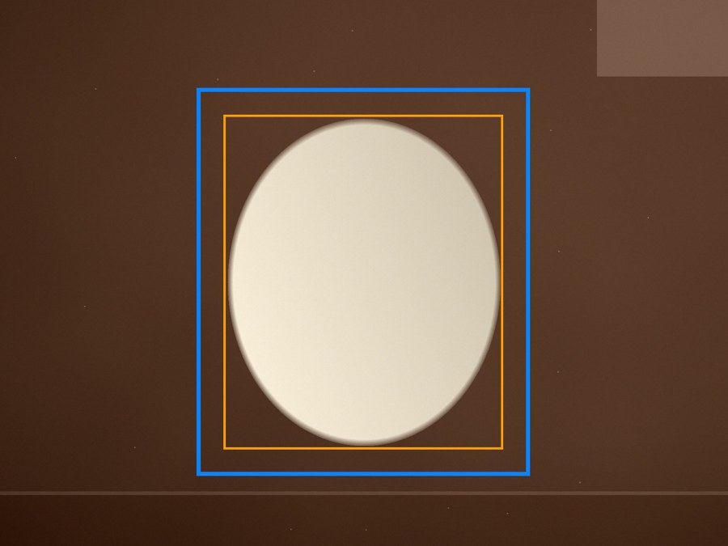
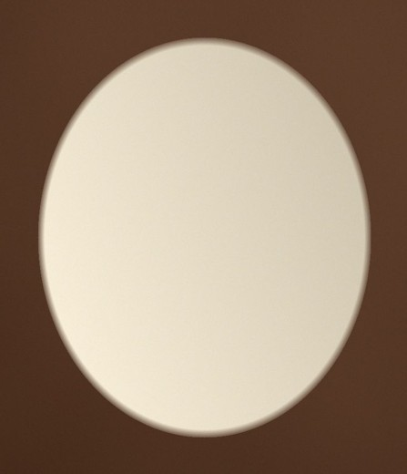

BulkPhotoEditor-Setup-6.1.0.exe (SmartScreen: More info → Run anyway).No installer? Unzip the portable zip and run BulkPhotoEditor.exe, or double-click packaging\windows\install_from_source.bat (needs Python 3.9+).
brew install python-tk).pip3 install -r requirements-macos.txt./packaging/build_mac_app.sh --install builds the app, copies it to Applications and adds the Finder Quick Action.Or run from source: python3 run.py.
pip install -r requirements.txtpython run.pypython run.py ~/Pictures/shoot-1 opens a folder straight away.Full steps and troubleshooting: INSTALL.md.
_edited), JPEG / PNG / WEBP and quality.1 photo list · 2 preview with grid, crop box, zoom and view modes · 3 tool tabs · 4 process. Illustrative layout; the real window uses your system's native controls on macOS.
The app finds the product at the centre of the photo, crops where it ends (plus padding) and keeps gray areas, lines and corner blocks of the backdrop out of the crop. It has two profiles, each with its own settings, because the two kinds of backdrop behave differently:
| Light profile | Dark profile | |
|---|---|---|
| For | white, off-white, light-gray | brown, black, coloured |
| Backdrop model | one flat colour (the brightest part of the photo) | fitted from the photo's border: colour + lighting gradient + vignette |
| Noise handling | standard | light blur to ignore grain and JPEG noise |
| Tolerance (default) | 20 | 18 |
| Ignore soft shadow | off (×2.2 contrast when on) | off (×1.5 contrast when on) |
Crop tab → Background type: Auto (default) looks at the photo's outer border and picks the profile per photo, so a mixed folder just works. Force Light or Dark if a photo is classified wrongly (e.g. a mid-gray backdrop). Tolerance and shadow are set separately for each profile.




Examples are synthetic test photos.
| Symptom | Try |
|---|---|
| Crop includes a line, gray area or shadow | Lower Tolerance (catches fainter things); or tick Ignore soft shadow for that profile. |
| Crop cuts a very light product on white / very dark product on brown | Lower Tolerance for that profile and leave Ignore soft shadow off (it raises the contrast needed to count as product). |
| Crop is too tight / too loose everywhere | Padding and Crop size adjust (±% of the photo) change every auto crop at once. |
| Wrong profile chosen | Set Background type to Light or Dark. |
| Product must stay centred, but is near the edge | Keep Add background to keep the product centred on: the canvas is extended with the backdrop colour. |
| One photo is still wrong | Drag its crop box by hand (✂). Re-run auto-crop resets it. |
| Tab | What it does |
|---|---|
| Levels | Black point / midtones (gamma) / white point for RGB or R, G, B separately, with a live histogram. All photos edits the shared levels; This photo only gives the current photo its own (✎). Auto, copy-to-selected, make-global and reset are in the panel. |
| Crop | Aspect ratio, padding, crop size adjust, background type and per-profile tolerance / shadow, background extension, re-run auto-crop. |
| Color | Brightness, contrast, saturation, sharpness, black & white, sepia; rotate and flip. |
| Size | None, Fit within W×H (never upscales) or percent. |
| Mark | Text and/or image watermark (PNG with transparency works best). Seven positions: bottom / top × left / centre / right, plus centre. Opacity, text size (% of height), image width (% of photo width). |
| Output | Folder, suffix, JPEG / PNG / WEBP, quality. Never overwrites (name_1.jpg…). |
Drop photos and/or folders on the window, the preview or the photo list. Folders are searched recursively; non-images are skipped; duplicates ignored. Needs the bundled tkinterdnd2 library (included in the Windows installer); without it everything else still works.
Install with the right-click menu task ticked: right-click a folder (or a folder's empty background, or photos) → Open in Bulk Photo Editor. Windows 11: under Show more options.
Run packaging/quick_action/install_quick_action.sh, then right-click a folder → Quick Actions → Open in Bulk Photo Editor. Folders and photos can also be dropped on the Dock icon, or open -a "Bulk Photo Editor" folder.
If the app is already open (macOS), the photos are added to the current list. On the command line: python run.py folder1 photo.jpg.
| Keys | Action | Keys | Action |
|---|---|---|---|
| ← → | previous / next photo | ⌘/Ctrl+O | add photos |
| Delete / ⌫ | remove selected from list | ⇧⌘/Ctrl+Shift+O | add folder |
| ⌘/Ctrl++ / − | zoom in / out | ⌘/Ctrl+E | process all |
| ⌘/Ctrl+0 / 1 | fit / 100 % | ⌘/Ctrl+[ / ] | rotate left / right |
| mouse wheel | zoom | drag (or right/middle drag) | move crop box / pan |
| double-click a slider | reset it |
| Problem | Fix |
|---|---|
No module named tkinter | Windows: reinstall Python, tick tcl/tk and IDLE. macOS: python.org installer or brew install python-tk. |
| Drag-and-drop does nothing | pip install tkinterdnd2; use Add files / Add folder meanwhile. |
| macOS: app is light, not dark | pip install pyobjc-framework-Cocoa (otherwise the app uses its own dark theme). |
| Preview is slow on huge photos | The preview uses a reduced copy; the export always uses the full-size original. |
| Windows SmartScreen / antivirus warning | The installer is unsigned; see INSTALL.md → Signing. |